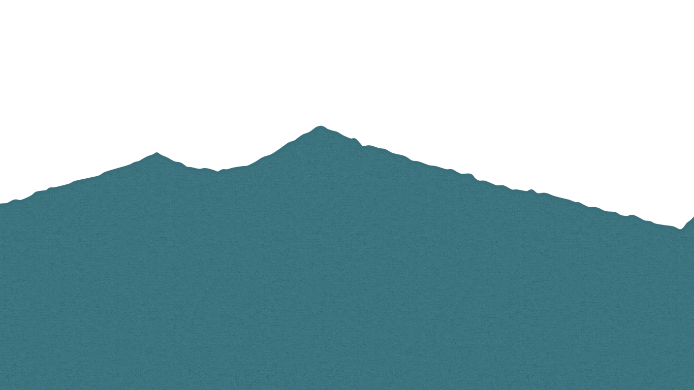
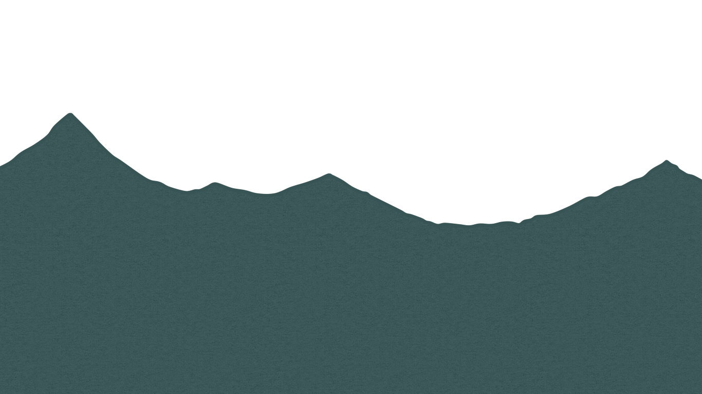
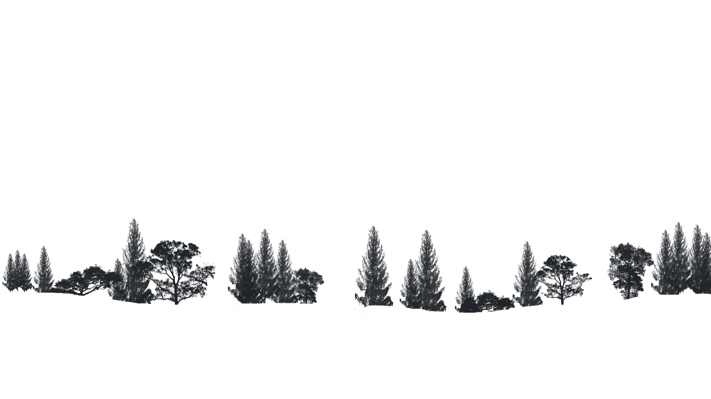
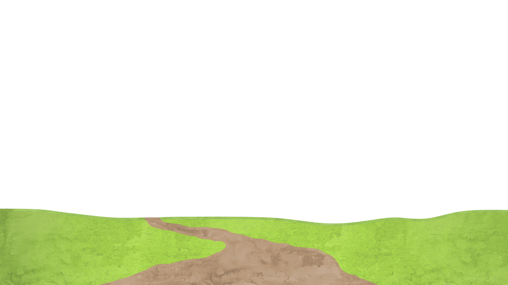
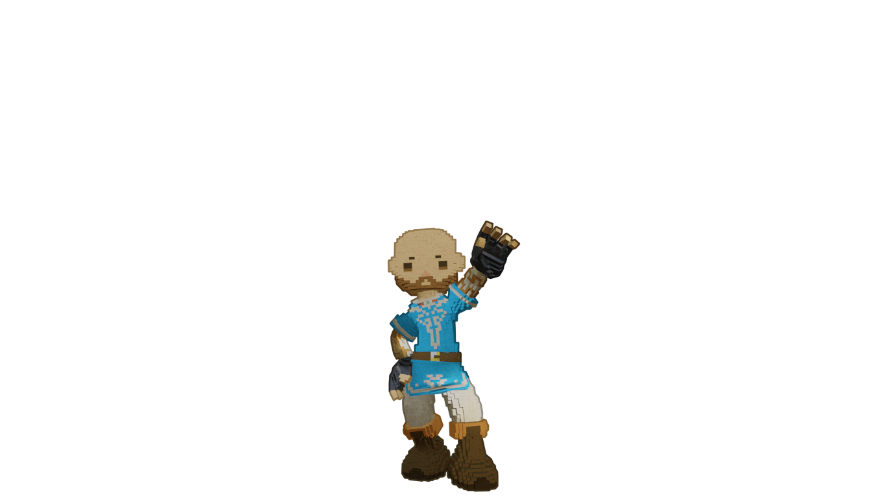
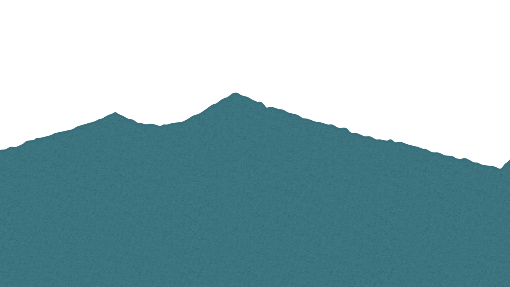
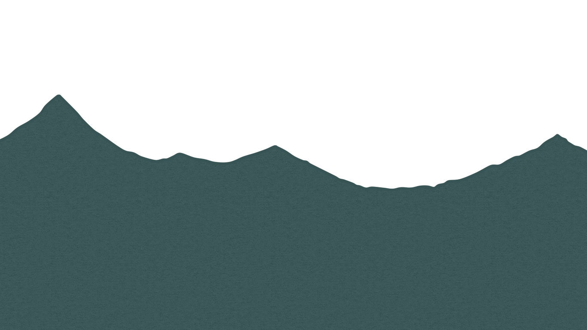
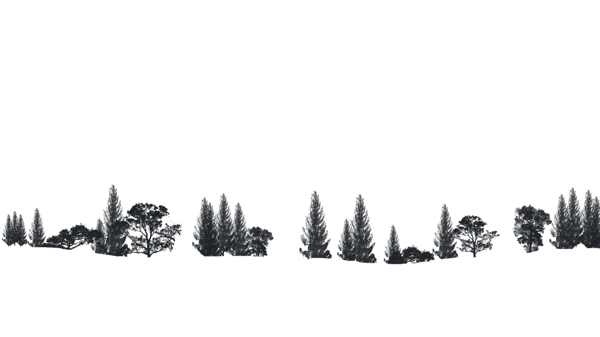
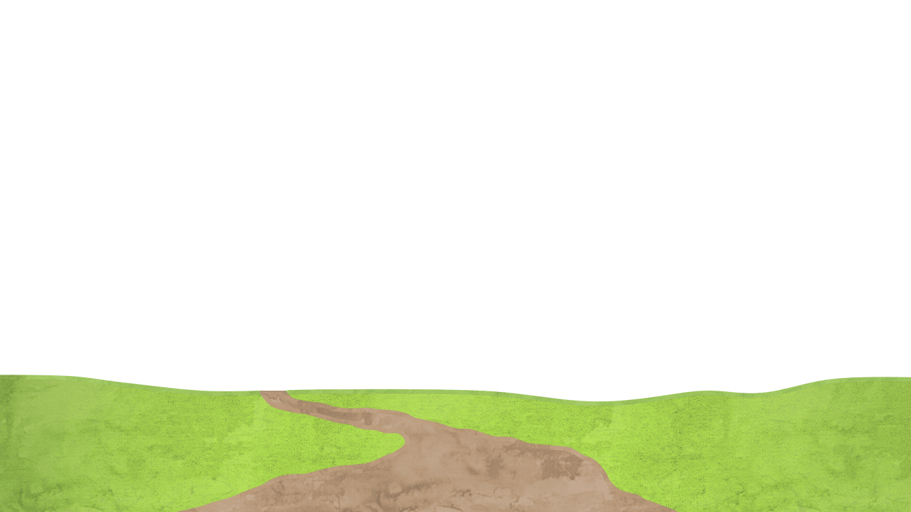
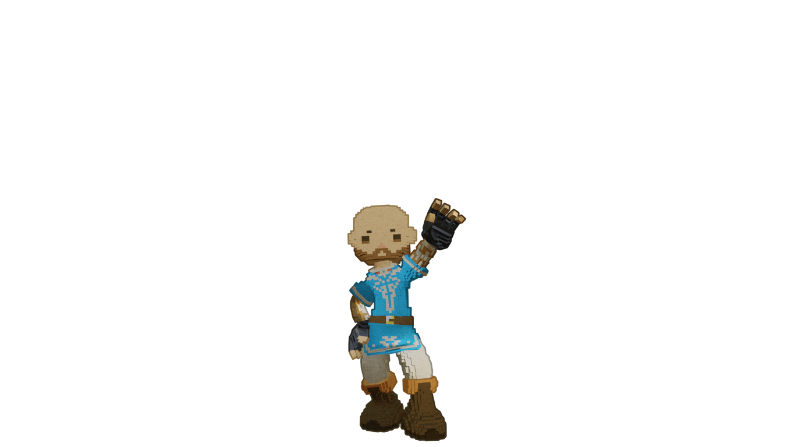

me.about()
Meu nome é Hygor Vinícius, sou Eng. de Controle e Automação e possuo mestrado em Eng. Biomédica pelo Programa de Pós-graduação em Eng. Biomédica (PPGEB) da Universidade Tecnológica Federal do Paraná (UTFPR - Curitiba). Possuo um projeto Open-Source de uma órtese robótica para mão controlada por sinais eletromiográficos ao qual forneço suporte continuado: MYoRHO - uma tecnologia assistiva que auxilia pessoas com lesões e doenças neuromusculares em suas atividades de vida diária. Devido minha área de graduação e pós-graduação, tenho grande experiência com sistemas microcontrolados e embarcados.
O primeiro contato que tive com programação foi em meados de 2009, no RPG Maker XP. No programa era possível construir blocos de comportamento de um personagem através da interface, mas havia a possibilidade de programar usando a Ruby Game Scripting System, baseada na linguagem Ruby. Desde então, todo contato que tenho com qualquer forma de programação fico entusiasmado para tentar colocar minhas ideias em prática e testar até onde consigo ir utilizando tal linguagem.
Visto as oportunidades de trabalho emergentes na área de web development, decidi migrar da área acadêmica e me tornar um desenvolvedor Full Stack. Ser um desenvolvedor junior me garante o privilégio de ter muitas ferramentas a explorar, e até agora essa nova jornada tem me divertido bastante.
Habilidades adquiridas:
landingPage()
Uma landing page simples desenvolvida durante o curso "Python 3 do Básico Ao Avançado", no módulo de CSS3 e HTML5 com o professor Luiz Otávio Miranda.
Aqui aprendi sobre layout responsivo e também como aplicar media queries!
caraOuCoroa()
Cara ou coroa? Este projeto surgiu da minha curiosidade em simular e animar um elemento 3D com perspectiva superior. Pretendo reutilizá-lo em outro projeto que estou elaborando. Utilizei JavaScript para aleatorizar o resultado!
nindooRpg()
Uma ficha browser de RPG feita com muito carinho para amantes do universo de Naruto. Tentei aplicar conceitos de layout fluido, e percebi que é uma habilidade que ainda preciso desenvolver melhor.
Não utilizei frameworks para explorar minhas habilidades recém-adquiridas ao máximo, assim, vou poder usar o máximo potencial desses frameworks. Este projeto será refeito eventualmente, conforme eu adquira novas habilidades.
A sessão discussão foi reservada para recolher o feedback de eventuais usuários.
myOrho()
MYoRHO é uma órtese robótica de mão por controle mioelétrico de superfície, em outras palavras, uma interface músculo-máquina não-invasiva open source. Esse sistema usa uma metodologia user-tuned para desenvolver uma órtese feita sob-medida para o usuário, utilizando no ciclo de desenvolvimento métricas retiradas do usuário (ergonomia e sinais mioeléticos de superfícies).